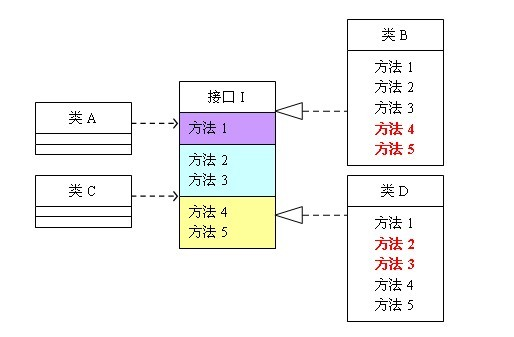

设计模式基本原则
设计模式基本原则
开闭原则(Open Close Principle)
开闭原则的意思是：对扩展开放，对修改关闭。在程序需要进行拓展的时候，不能去修改原有的代码，实现一个热插拔的效果。简言之，是为了使程序的扩展性好，易于维护和升级。
可以通过“抽象约束、封装变化”来实现开闭原则，即通过接口或者抽象类为软件实体定义一个相对稳定的抽象层，而将相同的可变因素封装在相同的具体实现类中。因为抽象灵活性好，适应性广，只要抽象的合理，可以基本保持软件架构的稳定。而软件中易变的细节可以从抽象派生来的实现类来进行扩展，当软件需要发生变化时，只需要根据需求重新派生一个实现类来扩展就可以了。
开闭原则无非就是想表达这样一层意思：用抽象构建框架，用实现扩展细节。因为抽象灵活性好，适应性广，只要抽象的合理，可以基本保持软件架构的稳定。当然前提是我们的抽象要合理，要对需求的变更有前瞻性和预见性才行。
里氏替换原则（Liskov Substitution Principle）
里氏替换原则是指，任何基类可以出现的地方，子类一定可以出现，也就是说：子类继承父类时，除添加新的方法完成新增功能外，尽量不要重写父类的方法。LSP 是继承复用的基石，只有当派生类可以替换掉基类，且软件单位的功能不受到影响时，基类才能真正被复用，而派生类也能够在基类的基础上增加新的行为。里氏替换原则是对开闭原则的补充。实现开闭原则的关键步骤就是抽象化，而基类与子类的继承关系就是抽象化的具体实现，所以里氏替换原则是对实现抽象化的具体步骤的规范。
对里氏替换原则的定义可以总结如下：
- 子类可以实现父类的抽象方法，但不能覆盖父类的非抽象方法
- 子类中可以增加自己特有的方法
- 当子类的方法重载父类的方法时，方法的前置条件（即方法的输入参数）要比父类的方法更宽松
- 当子类的方法实现父类的抽象方法时（重写/重载或实现抽象方法），方法的后置条件（即方法的的输出/返回值）要比父类的方法更严格或相等
通过重写父类的方法来完成新的功能写起来虽然简单，但是整个继承体系的可复用性会比较差，特别是运用多态比较频繁时，程序运行出错的概率会非常大。
举例
举例说明继承的风险，我们需要完成一个两数相减的功能，由类A来负责。
1 | class A{ |
运行结果：
1 | 100-50=50 |
后来，我们需要增加一个新的功能：完成两数相加，然后再与100求和，由类B来负责。即类B需要完成两个功能
-
两数相减。
-
两数相加，然后再加100。
由于类A已经实现了第一个功能，所以类B继承类A后，只需要再完成第二个功能就可以了，代码如下：
1 | class B extends A{ |
类B完成后，运行结果：
1 | 100-50=150 |
我们发现原本运行正常的相减功能发生了错误。原因就是类B在给方法起名时无意中重写了父类的方法，造成所有运行相减功能的代码全部调用了类B重写后的方法，造成原本运行正常的功能出现了错误。在本例中，引用基类A完成的功能，换成子类B之后，发生了异常。在实际编程中，我们常常会通过重写父类的方法来完成新的功能，这样写起来虽然简单，但是整个继承体系的可复用性会比较差，特别是运用多态比较频繁时，程序运行出错的几率非常大。如果非要重写父类的方法，比较通用的做法是：原来的父类和子类都继承一个更通俗的基类，原有的继承关系去掉，采用依赖、聚合，组合等关系代替。
依赖倒转原则（Dependence Inversion Principle）
这个原则是开闭原则的基础，具体内容：针对接口编程，依赖于抽象而不依赖于具体。高层模块不应该依赖低层模块，两者都应该依赖其抽象；抽象不应该依赖细节，细节应该依赖抽象（High level modules shouldnot depend upon low level modules.Both should depend upon abstractions.Abstractions should not depend upon details. Details should depend upon abstractions）。其核心思想是：要面向接口编程，不要面向实现编程。
总结如下：
每个类尽量提供接口或抽象类，或者两者都具备。
变量的声明类型尽量是接口或者是抽象类。
任何类都不应该从具体类派生。
使用继承时尽量遵循里氏替换原则。
举例
依赖倒置原则的核心思想是面向接口编程，我们依旧用一个例子来说明面向接口编程比相对于面向实现编程好在什么地方。场景是这样的，母亲给孩子讲故事，只要给她一本书，她就可以照着书给孩子讲故事了。代码如下：
1 | class Book{ |
运行结果：
1 | 妈妈开始讲故事 |
运行良好，假如有一天，需求变成这样：不是给书而是给一份报纸，让这位母亲讲一下报纸上的故事，报纸的代码如下：
1 | class Newspaper{ |
这位母亲却办不到，因为她居然不会读报纸上的故事，这太荒唐了，只是将书换成报纸，居然必须要修改Mother才能读。假如以后需求换成杂志呢？换成网页呢？还要不断地修改Mother，这显然不是好的设计。原因就是Mother与Book之间的耦合性太高了，必须降低他们之间的耦合度才行。
我们引入一个抽象的接口IReader。读物，只要是带字的都属于读物：
1 | interface IReader{ |
Mother类与接口IReader发生依赖关系，而Book和Newspaper都属于读物的范畴，他们各自都去实现IReader接口，这样就符合依赖倒置原则了，代码修改为：
1 | class Newspaper implements IReader { |
运行结果：
1 | 妈妈开始讲故事 |
这样修改后，无论以后怎样扩展Client类，都不需要再修改Mother类了。这只是一个简单的例子，实际情况中，代表高层模块的Mother类将负责完成主要的业务逻辑，一旦需要对它进行修改，引入错误的风险极大。所以遵循依赖倒置原则可以降低类之间的耦合性，提高系统的稳定性，降低修改程序造成的风险。
采用依赖倒置原则给多人并行开发带来了极大的便利，比如上例中，原本Mother类与Book类直接耦合时，Mother类必须等Book类编码完成后才可以进行编码，因为Mother类依赖于Book类。修改后的程序则可以同时开工，互不影响，因为Mother与Book类一点关系也没有。参与协作开发的人越多、项目越庞大，采用依赖导致原则的意义就越重大。现在很流行的TDD开发模式就是依赖倒置原则最成功的应用。
单一职责原则（Single Responsibility Principle）
单一职责原则规定一个类应该有且仅有一个引起它变化的原因，否则类应该被拆分（There should never be more than one reason for a class to change）。
单一职责原则是最简单但又最难运用的原则，需要设计人员发现类的不同职责并将其分离，再封装到不同的类或模块中。
该原则提出对象不应该承担太多职责，如果一个对象承担了太多的职责，至少存在以下两个缺点：
-
一个职责的变化可能会削弱或者抑制这个类实现其他职责的能力；
-
当客户端需要该对象的某一个职责时，不得不将其他不需要的职责全都包含进来，从而造成冗余代码或代码的浪费。
说到单一职责原则，很多人都会不屑一顾。因为它太简单了。稍有经验的程序员即使从来没有读过设计模式、从来没有听说过单一职责原则，在设计软件时也会自觉的遵守这一重要原则，因为这是常识。在软件编程中，谁也不希望因为修改了一个功能导致其他的功能发生故障。而避免出现这一问题的方法便是遵循单一职责原则。虽然单一职责原则如此简单，并且被认为是常识，但是即便是经验丰富的程序员写出的程序，也会有违背这一原则的代码存在。为什么会出现这种现象呢？因为有职责扩散。所谓职责扩散，就是因为某种原因，职责P被分化为粒度更细的职责P1和P2。
比如：类T只负责一个职责P，这样设计是符合单一职责原则的。后来由于某种原因，也许是需求变更了，也许是程序的设计者境界提高了，需要将职责P细分为粒度更细的职责P1，P2，这时如果要使程序遵循单一职责原则，需要将类T也分解为两个类T1和T2，分别负责P1、P2两个职责。但是在程序已经写好的情况下，这样做简直太费时间了。所以，简单的修改类T，用它来负责两个职责是一个比较不错的选择，虽然这样做有悖于单一职责原则。（这样做的风险在于职责扩散的不确定性，因为我们不会想到这个职责P，在未来可能会扩散为P1，P2，P3，P4……Pn。所以记住，在职责扩散到我们无法控制的程度之前，立刻对代码进行重构。）
举例
用一个类描述动物呼吸这个场景
1 | class Animal{ |
运行结果：
1 | 牛呼吸空气 |
程序上线后，发现问题了，并不是所有的动物都呼吸空气的，比如鱼就是呼吸水的。修改时如果遵循单一职责原则，需要将Animal类细分为陆生动物类Terrestrial，水生动物Aquatic，代码如下：
1 | class Terrestrial{ |
运行结果：
1 | 牛呼吸空气 |
我们会发现如果这样修改花销是很大的，除了将原来的类分解之外，还需要修改客户端。而直接修改类Animal来达成目的虽然违背了单一职责原则，但花销却小的多，代码如下：
1 | class Animal{ |
可以看到，这种修改方式要简单的多。但是却存在着隐患：有一天需要将鱼分为呼吸淡水的鱼和呼吸海水的鱼，则又需要修改Animal类的breathe方法，而对原有代码的修改会对调用“猪”“牛”“羊”等相关功能带来风险，也许某一天你会发现程序运行的结果变为“牛呼吸水”了。这种修改方式直接在代码级别上违背了单一职责原则，虽然修改起来最简单，但隐患却是最大的。还有一种修改方式：
1 | class Animal{ |
可以看到，这种修改方式没有改动原来的方法，而是在类中新加了一个方法，这样虽然也违背了单一职责原则，但在方法级别上却是符合单一职责原则的，因为它并没有动原来方法的代码。这三种方式各有优缺点，那么在实际编程中，采用哪一中呢？其实这真的比较难说，需要根据实际情况来确定。我的原则是：只有逻辑足够简单，才可以在代码级别上违反单一职责原则；只有类中方法数量足够少，才可以在方法级别上违反单一职责原则；
例如本文所举的这个例子，它太简单了，它只有一个方法，所以，无论是在代码级别上违反单一职责原则，还是在方法级别上违反，都不会造成太大的影响。实际应用中的类都要复杂的多，一旦发生职责扩散而需要修改类时，除非这个类本身非常简单，否则还是遵循单一职责原则的好。
接口隔离原则（Interface Segregation Principle）
这个原则的意思是：使用多个隔离的接口，比使用单个接口要好。它还有另外一个意思是：降低类之间的耦合度。由此可见，其实设计模式就是从大型软件架构出发、便于升级和维护的软件设计思想，它强调降低依赖，降低耦合。换言之，要为各个类建立它们需要的专用接口，而不要试图去建立一个很庞大的接口供所有依赖它的类去调用。
在具体应用接口隔离原则时，应该根据以下几个规则来衡量。
- 接口尽量小，但是要有限度。一个接口只服务于一个子模块或业务逻辑。
- 为依赖接口的类定制服务。只提供调用者需要的方法，屏蔽不需要的方法。
- 了解环境，拒绝盲从。每个项目或产品都有选定的环境因素，环境不同，接口拆分的标准就不同深入了解业务逻辑。
- 提高内聚，减少对外交互。使接口用最少的方法去完成最多的事情。
很多人会觉的接口隔离原则跟单一职责原则很相似，其实不然。其一，单一职责原则原注重的是职责；而接口隔离原则注重对接口依赖的隔离。其二，单一职责原则主要是约束类，其次才是接口和方法，它针对的是程序中的实现和细节；而接口隔离原则主要约束接口接口，主要针对抽象，针对程序整体框架的构建。
举例
这个图的意思是：类A依赖接口I中的方法1、方法2、方法3，类B是对类A依赖的实现。类C依赖接口I中的方法1、方法4、方法5，类D是对类C依赖的实现。对于类B和类D来说，虽然他们都存在着用不到的方法（也就是图中红色字体标记的方法），但由于实现了接口I，所以也必须要实现这些用不到的方法。代码如下：
1 | interface I { |
可以看到，如果接口过于臃肿，只要接口中出现的方法，不管对依赖于它的类有没有用处，实现类中都必须去实现这些方法，这显然不是好的设计。如果将这个设计修改为符合接口隔离原则，就必须对接口I进行拆分。在这里我们将原有的接口I拆分为三个接口，拆分后的设计如图2所示：
1 | interface I1 { |
迪米特法则/最少知道原则（Demeter Principle）
最少知道原则是指：一个实体应当尽量少地与其他实体之间发生相互作用，使得系统功能模块相对独立。如果两个软件实体无须直接通信，那么就不应当发生直接的相互调用，可以通过第三方转发该调用。其目的是降低类之间的耦合度，提高模块的相对独立性。
对于被依赖的类来说，无论逻辑多么复杂，都尽量地的将逻辑封装在类的内部，对外除了提供的public方法，不对外泄漏任何信息。迪米特法则还有一个更简单的定义：只与直接的朋友通信。首先来解释一下什么是直接的朋友：每个对象都会与其他对象有耦合关系，只要两个对象之间有耦合关系，我们就说这两个对象之间是朋友关系。耦合的方式很多，依赖、关联、组合、聚合等。其中，我们称出现成员变量、方法参数、方法返回值中的类为直接的朋友，而出现在局部变量中的类则不是直接的朋友。也就是说，陌生的类最好不要作为局部变量的形式出现在类的内部。
从迪米特法则的定义和特点可知，它强调以下两点：
-
从依赖者的角度来说，只依赖应该依赖的对象。
-
从被依赖者的角度说，只暴露应该暴露的方法。
所以，在运用迪米特法则时要注意以下 6 点。
- 在类的划分上，应该创建弱耦合的类。类与类之间的耦合越弱，就越有利于实现可复用的目标。
- 在类的结构设计上，尽量降低类成员的访问权限。
- 在类的设计上，优先考虑将一个类设置成不变类。
- 在对其他类的引用上，将引用其他对象的次数降到最低。
- 不暴露类的属性成员，而应该提供相应的访问器（set 和 get 方法）。
- 谨慎使用序列化（Serializable）功能。
举例
有一个集团公司，下属单位有分公司和直属部门，现在要求打印出所有下属单位的员工ID。先来看一下违反迪米特法则的设计。
1 | //总公司员工 |
现在这个设计的主要问题出在CompanyManager中，根据迪米特法则，只与直接的朋友发生通信，而SubEmployee类并不是CompanyManager类的直接朋友（以局部变量出现的耦合不属于直接朋友），从逻辑上讲总公司只与他的分公司耦合就行了，与分公司的员工并没有任何联系，这样设计显然是增加了不必要的耦合。按照迪米特法则，应该避免类中出现这样非直接朋友关系的耦合。修改后的代码如下:
1 | class SubCompanyManager{ |
修改后，为分公司增加了打印人员ID的方法，总公司直接调用来打印，从而避免了与分公司的员工发生耦合。
合成复用原则（Composite Reuse Principle）
合成复用原则是指：尽量使用合成/聚合的方式，而不是使用继承。如果要使用继承关系，则必须严格遵循里氏替换原则。合成复用原则同里氏替换原则相辅相成的，两者都是开闭原则的具体实现规范。
聚合与继承的对比
通常类的复用分为继承复用和合成复用两种，继承复用虽然有简单和易实现的优点，但它也存在以下缺点。
-
继承复用破坏了类的封装性。因为继承会将父类的实现细节暴露给子类，父类对子类是透明的，所以这种复用又称为“白箱”复用。
-
子类与父类的耦合度高。父类的实现的任何改变都会导致子类的实现发生变化，这不利于类的扩展与维护。
-
限制了复用的灵活性。从父类继承而来的实现是静态的，在编译时已经定义，所以在运行时不可能发生变化。
采用组合或聚合复用时，可以将已有对象纳入新对象中，使之成为新对象的一部分，新对象可以调用已有对象的功能，它有以下优点。
-
它维持了类的封装性。因为成分对象的内部细节是新对象看不见的，所以这种复用又称为“黑箱”复用。
-
新旧类之间的耦合度低。这种复用所需的依赖较少，新对象存取成分对象的唯一方法是通过成分对象的接口。
-
复用的灵活性高。这种复用可以在运行时动态进行，新对象可以动态地引用与成分对象类型相同的对象。
最后总结
说到这里，再回想一下前面说的5项原则，恰恰是告诉我们用抽象构建框架，用实现扩展细节的注意事项而已：单一职责原则告诉我们实现类要职责单一；里氏替换原则告诉我们不要破坏继承体系；依赖倒置原则告诉我们要面向接口编程；接口隔离原则告诉我们在设计接口的时候要精简单一；迪米特法则告诉我们要降低耦合。而开闭原则是总纲，他告诉我们要对扩展开放，对修改关闭。总而言之，这些原则的目的只有一个：降低对象之间的耦合，增加程序的可复用性、可扩展性和可维护性。
最后说明一下如何去遵守这六个原则。对这六个原则的遵守并不是是和否的问题，而是多和少的问题，也就是说，我们一般不会说有没有遵守，而是说遵守程度的多少。任何事都是过犹不及，设计模式的六个设计原则也是一样，制定这六个原则的目的并不是要我们刻板的遵守他们，而需要根据实际情况灵活运用。对他们的遵守程度只要在一个合理的范围内，就算是良好的设计。
参考
https://blog.csdn.net/zhengzhb/article/details/7296944
https://blog.csdn.net/zhengzhb/article/details/7289269等系列
https://www.runoob.com/design-pattern/design-pattern-intro.html